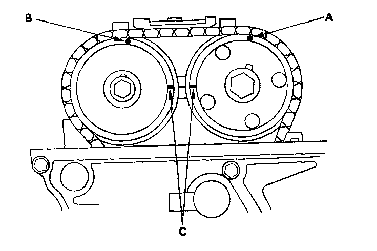
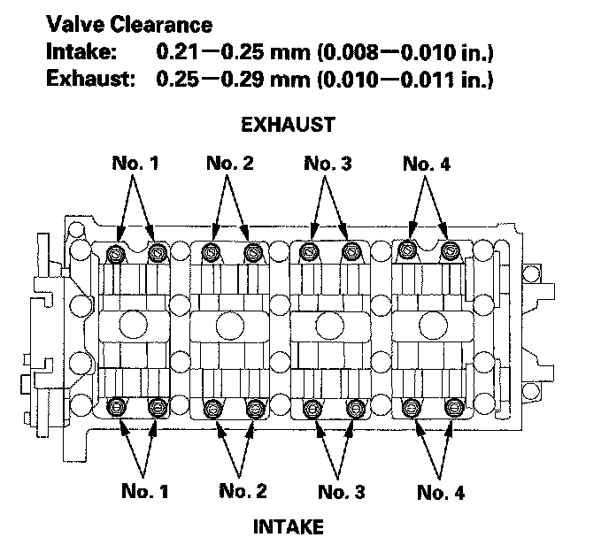
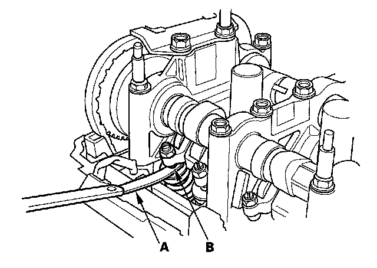
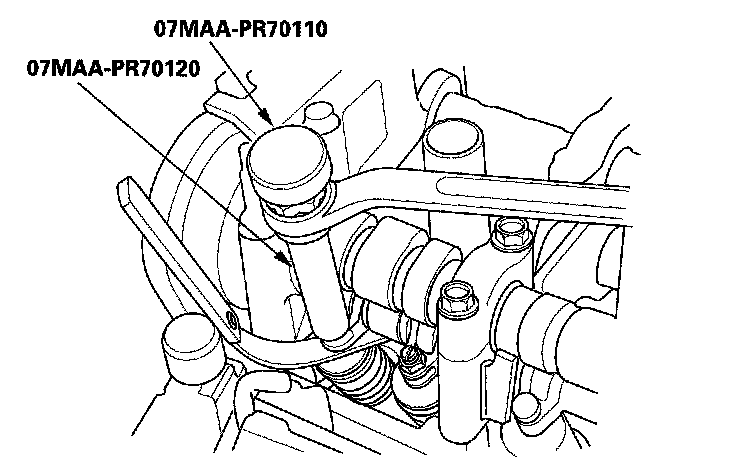
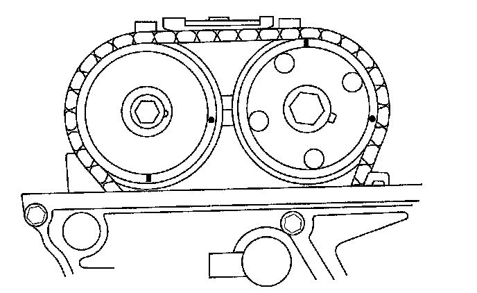
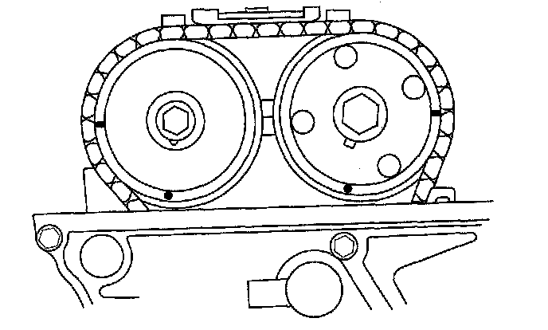
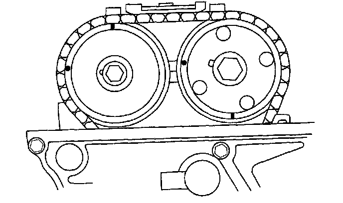

Valve Clearance: Adjustments
Valve Clearance AdjustmentSpecial Tools Required
^ Adjuster 07MAA-PR70110
^ Locknut wrench 07MAA-PR70120
NOTE: Adjust the valves only when the cylinder head temperature is less than 100° F (38° C).
1. Remove the cylinder head cover.
2. Set the No. 1 piston at top dead center (TDC). The punch mark (A) on the variable valve timing control (VTC) actuator and the punch mark (B) on the exhaust camshaft sprocket should be at the top. Align the TDC marks (C) on the VTC actuator and exhaust camshaft sprocket.

3. Select the correct thickness feeler gauge for the valves you're going to check.

4. Insert the feeler gauge (A) between the adjusting screw (B) and the end of the valve stem, and slide it back and forth; you should feel a slight amount of drag.

5. If you feel too much or too little drag, loosen the locknut with the special tools, and turn the adjusting screw until the drag on the feeler gauge is correct.

6. Tighten the locknut to 20 N-m (2.0 kgf-m, 14 lbf-ft), and recheck the clearance. Repeat the adjustment if necessary.
7. Rotate the crankshaft 180° clockwise (camshaft pulley turns 90°).

8. Check and, if necessary, adjust the valve clearance on No. 3 cylinder.
9. Rotate the crankshaft 180° clockwise (camshaft pulley turns 90°).

10. Check and, if necessary, adjust the valve clearance on No. 4 cylinder.
11. Rotate the crankshaft 180° clockwise (camshaft pulley turns 90°).

12. Check and, if necessary, adjust the valve clearance on No. 2 cylinder.
13. Install the cylinder head cover.